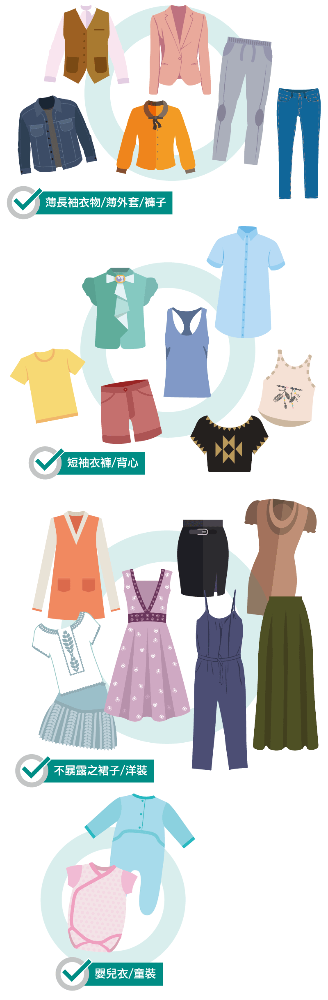
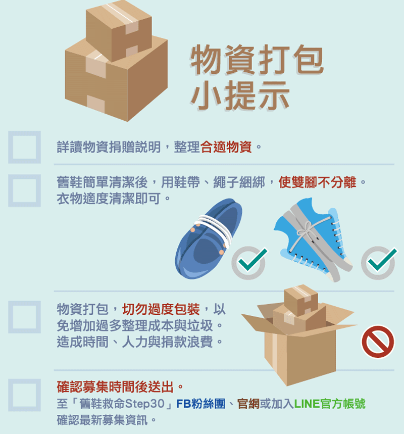

地址：新北市泰山區新北大道6段79巷57弄8-2號（伯利恆倉庫
親送時段：星期一〜星期六 10：00~18：00（週日休息）
為了讓倉庫工作人員可以加快速度整理，請勿於非募集期寄送包裹，謝謝您的體諒
寄送地址：新北市泰山區新北大道6段79巷57弄8-2號（伯利恆倉庫）
掌握每次募集時間，請加入@LINE
或撥打電話：02-7741-5519
可使用郵局、嘉里大榮物流、新竹物流、黑貓宅急便，以及各大貨運物流皆可寄送。
特別感謝：萬海航運捐贈貨櫃
【童鞋】：十二歲以下童鞋最迫切需要。
【舊鞋】：需品質堪用之男鞋﹑女鞋(平底包鞋為主)，無破洞、磨損、裂痕、脫皮、氧化等狀況。
【舊衣】：以夏季衣物為主（衣服褲子大人小孩皆可 ; 內衣褲，襪子不收）
【書包】：畢業書包，以及其他可放入A4尺寸之各式包（環保袋、不織布、硬殼包、拉桿包不收）。
舊鞋不限尺寸、年齡，需品質堪用之男鞋﹑女鞋（平底包鞋為主），無破洞、磨損、裂痕、脫皮、氧化等狀況。
畢業書包，以及其他可放入A4尺寸之各式包，過小的不適合。
*環保袋、不織布、硬殼包、拉桿包不收
*因文化的不同，非洲國家的女生，不適合穿過於曝露或過短的裙子、褲子。
不耐穿的款式、拖鞋、高跟鞋、厚底鞋、長靴、雪靴、涼鞋、布希鞋、塑膠鞋、運動拖鞋、短雨鞋。
鞋子發徽、破爛、掉底、開口、鞋面氧化、鞋底斷裂等。
*以上款示因氣候、環境與耐用性不適合，請勿捐贈。
不能裝A4尺寸之包包、零錢包、塑膠材質、硬殼材質、不織布購物袋、紙袋、塑膠袋、拉桿式書包、行李箱。
*以上款示皆因環境、氣候、實用性、以及貨櫃運送硬殼物資容易碎裂，請勿捐贈。
過度暴露、過短、內衣褲、泳衣、過於保暖的冬衣、帽子、配件。
*以上款示皆因環境、氣候、實用性、以及貨櫃運送硬殼物資容易碎裂，請勿捐贈。